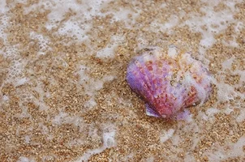

Punta Cana is often regarded as one of the best budget-friendly destination for resorts.
Multiple article's listing out which Carribean island to visit, Punta Cana is highly regarded as one of the best It's the most popular
destination for Americans for a reason.
The bilingual staffs help the foreign guests with many amenities required.
Not to mention, also kid friendly. A way to be kid-free with the endless teen services provided. You just cannot beat the scenery!
So, what is included with my visit to the island?
In an article one said, "After visiting Jamaica earlier this year, I was already itching to head back to the Caribbean for another island getaway. And Im so excited that I got to visit beautiful Punta Cana in the Dominican Republic recently to cure my itch! Since DR is huge, we just stayed over in the Punta Cana region as we only had 5 days. In this post I will be sharing my tips on planning a trip to the Dominican, if you are headed to Punta Cana." With the various resorts Punta Cana has to provide, each will be unique to it's resort. Many think Punta Cana is just one resort. It's a location with various resorts with their own themes and facilities.

Things to do at the beach!𓈒ㅤׂㅤ𓇼 ࣪ 𓈒ㅤׂㅤ⭒ 𓆡 ⭒ㅤ𓈒ㅤׂ 🫧
Golf lovers can tee off with ocean views at Punta Espada Golf Club, while others enjoy deep-sea fishing, horseback riding along the beach, or dancing to live merengue and bachata at local spots. With endless outdoor adventures and vibrant cultural experiences, Punta Cana offers the perfect mix of relaxation and thrill. Suited for everyone and their needs. 𓈒ㅤׂㅤ𓇼 ࣪ 𓈒ㅤׂㅤ⭒ 𓆡 ⭒ㅤ𓈒ㅤׂ 🫧
 Click here for Home Page 𓈒ㅤׂㅤ𓇼 ࣪ 𓈒ㅤׂㅤ⭒
𓆡 ⭒ㅤ𓈒ㅤׂ 🫧
Click here for Home Page 𓈒ㅤׂㅤ𓇼 ࣪ 𓈒ㅤׂㅤ⭒
𓆡 ⭒ㅤ𓈒ㅤׂ 🫧